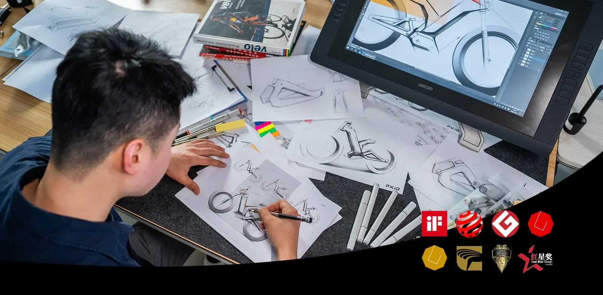
PRODUCT DESIGN
产品设计
围绕目标市场与使用场景，开展产品定义、造型设计、三维建模与方案评审。
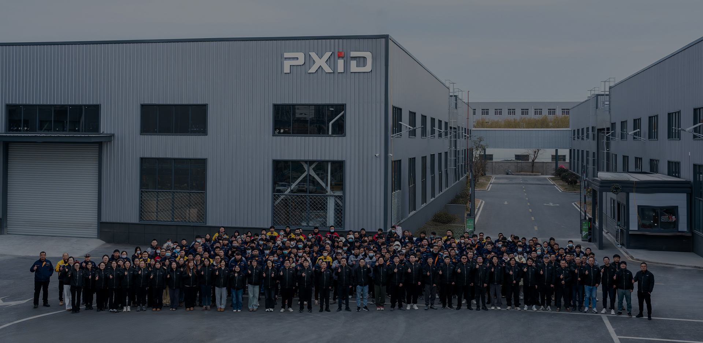
DESIGN & ENGINEERING
产品设计、整车工程与样车验证相互衔接，让造型、结构和系统开发围绕同一个产品目标展开。

围绕目标市场与使用场景，开展产品定义、造型设计、三维建模与方案评审。
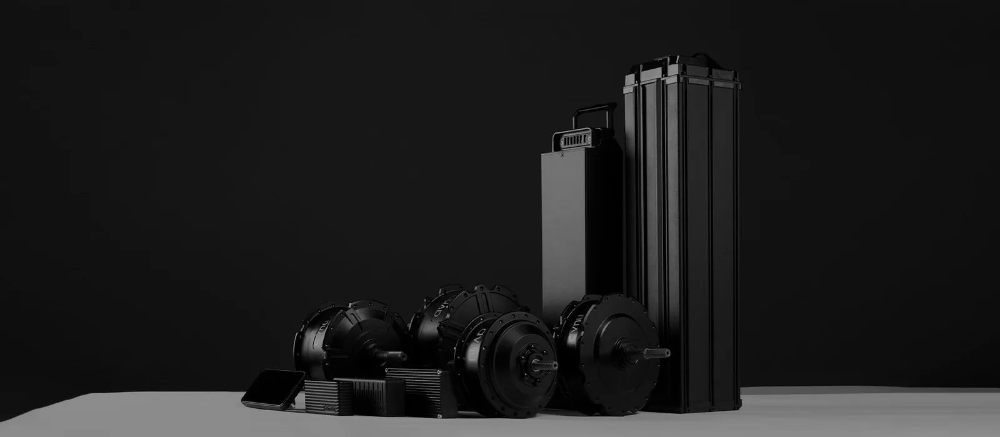
将结构、材料、驱动控制、电池管理与人机交互纳入整车工程开发。
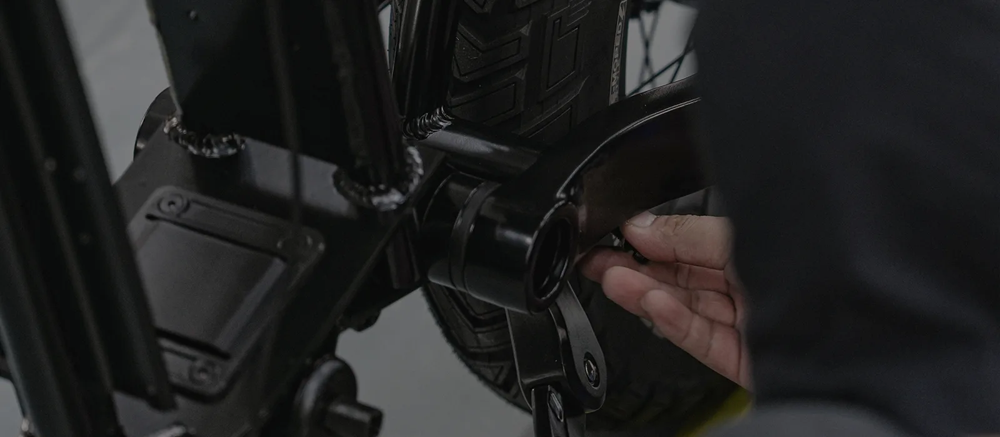
通过样车验证结构、装配与制造工艺，推动设计方案进入可制造状态。
IN-HOUSE MANUFACTURING
在 25,000㎡ 智能制造基地，模具、零件、车架与整车装配相互衔接，工程与生产围绕工艺和检验要求协同。
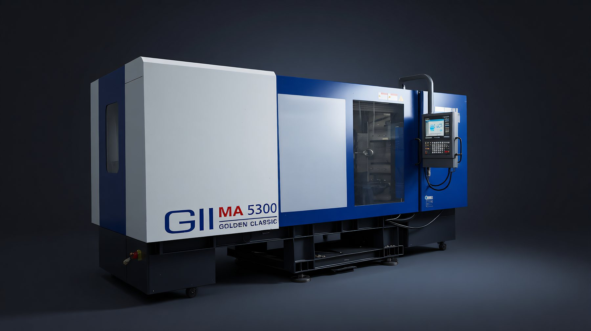
01 INJECTION MOLDING
塑料结构件、外观件与功能件
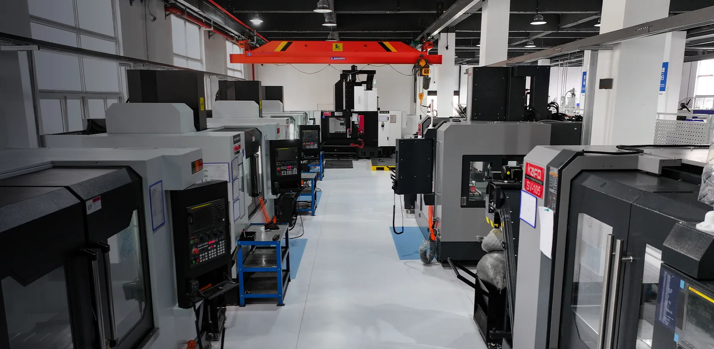
02 CNC MACHINING
样件、工装与金属零件加工
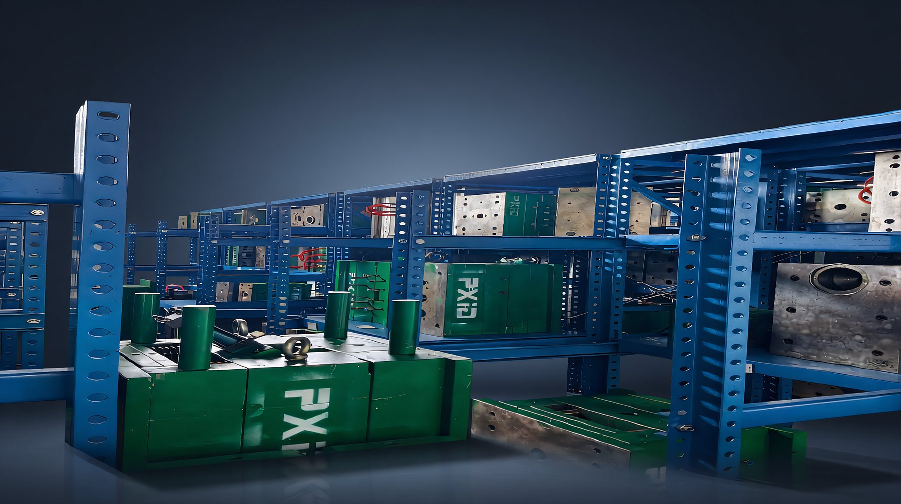
03 TOOLING
从 DFM 评审到试模修模
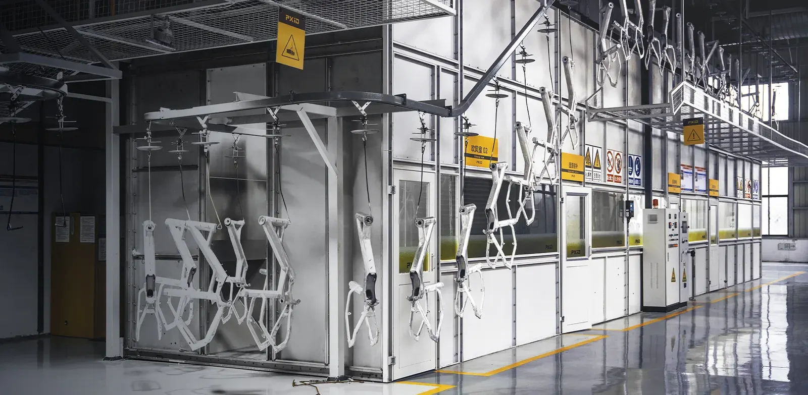
04 FRAME & COATING
结构成型、校正与表面处理
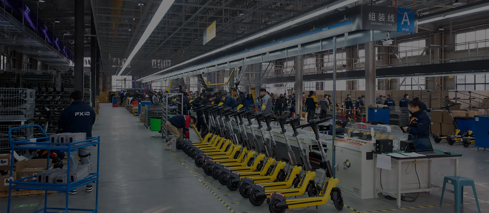
05 ASSEMBLY
整车、部件与电气功能调试
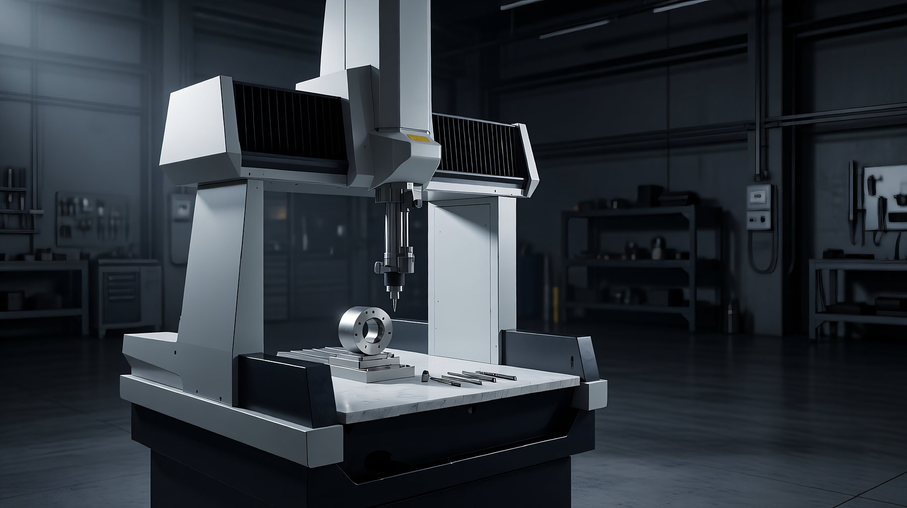
06 TESTING
尺寸、耐久与整车验证
QUALITY & DIGITAL FACTORY
来料、制造过程与出货均设置检验环节，批次记录关联材料、工序与测试结果。数字化建设进一步连接研发、生产与物料信息。
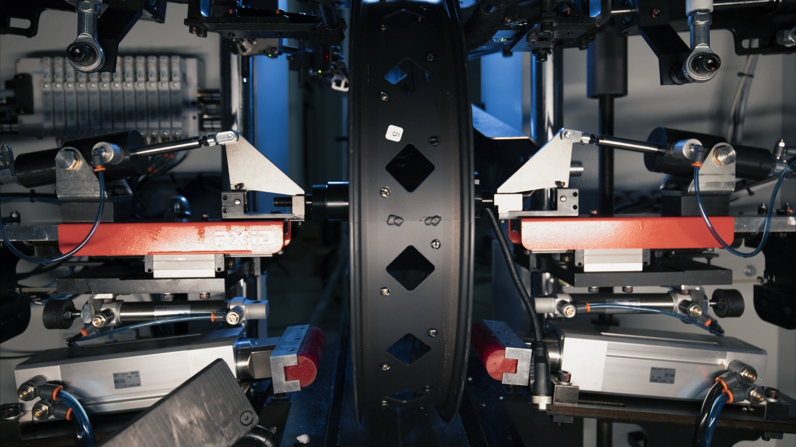
通过尺寸检测、盐雾试验与包含路试在内的 20+ 项首批样车测试，检查产品与制造要求。
入库前检查材料组成、性能与规格，确认来料满足项目要求。
核查关键工序，记录过程结果，及时纠正生产偏差。
检查外观、尺寸、功能与包装，完成合格品放行。
保留批次记录、材料证明与测试数据，支持质量问题追溯。
CONNECTED FACTORY
从工程版本到生产执行，再到仓储与供应协同，持续完善现场记录与信息追溯。
贯通研发、工艺设计、BOM、版本变更与生产执行，让工程信息衔接现场。
通过条码管理，关联库存、出入库与物料配送。
连接采购、交付、质检与售后信息，完善供应和质量追溯。
CERTIFICATIONS
点击证书，查看原图
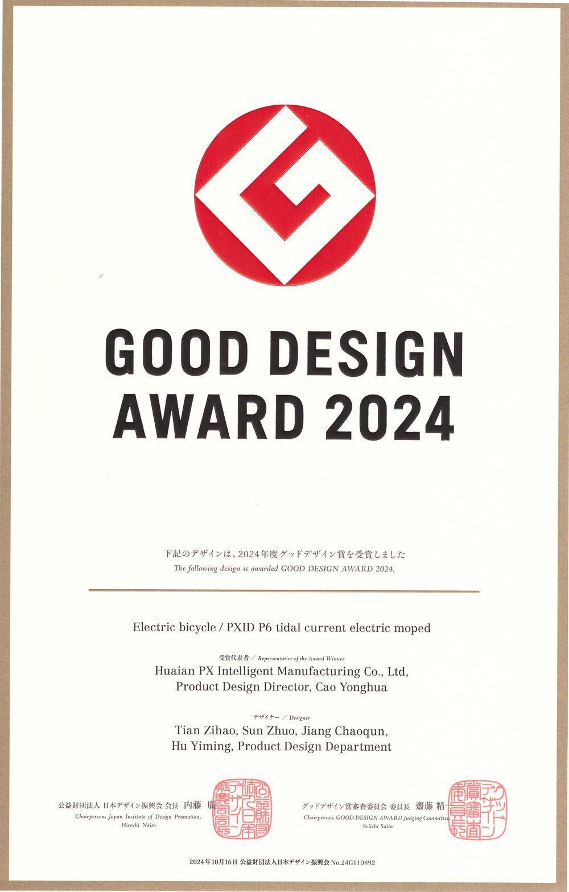
日本优良设计奖 · P6 电动摩托车
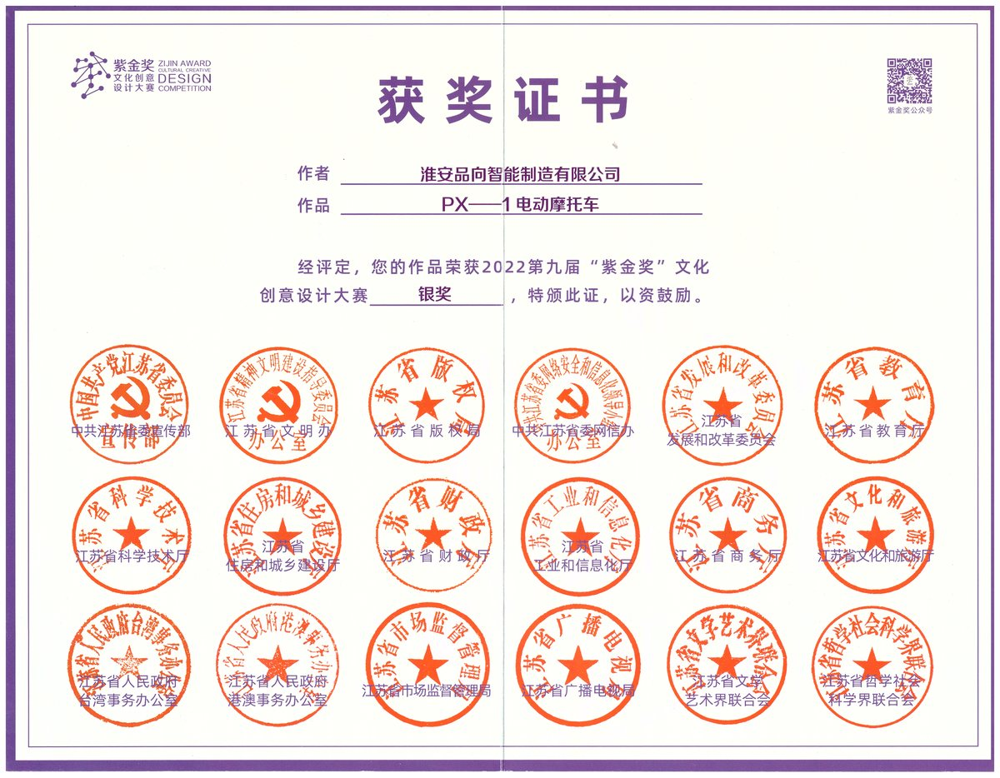
文化创意设计大赛 · PX-1 电动摩托车
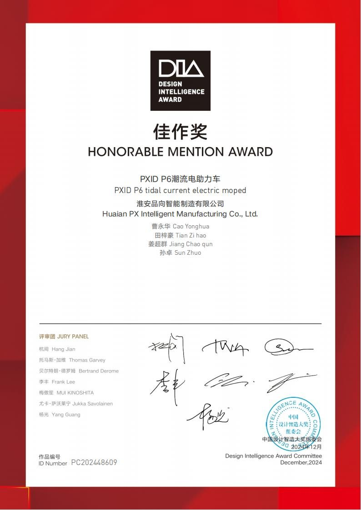
中国设计智造大奖 · P5 电动摩托车
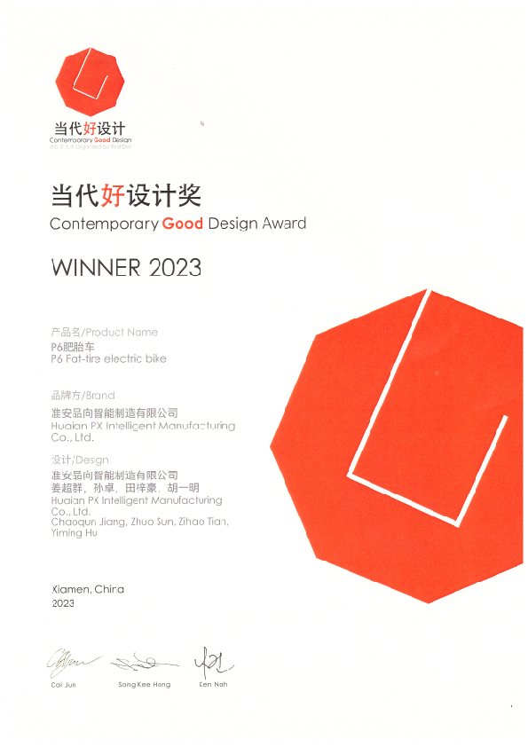
P2 胖胎电动自行车
PXID · 2013—2026
从设计起步，走向智能制造。
SCROLL TO EXPLORE
START WITH PXID
了解合作方式或沟通产品需求，可以进一步查看 ODM 全流程，或与 PXID 团队联系。